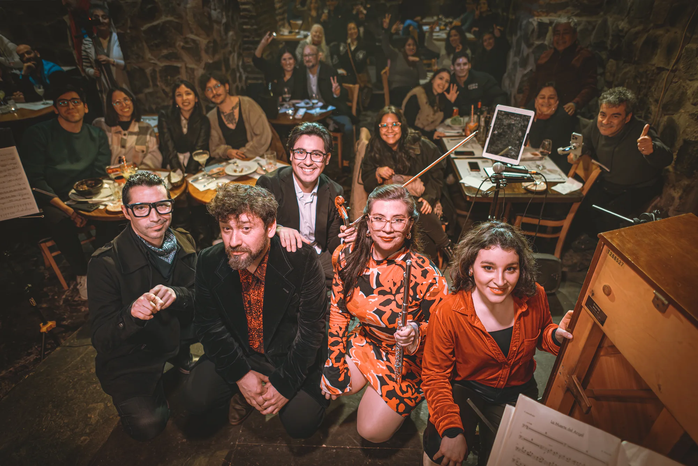
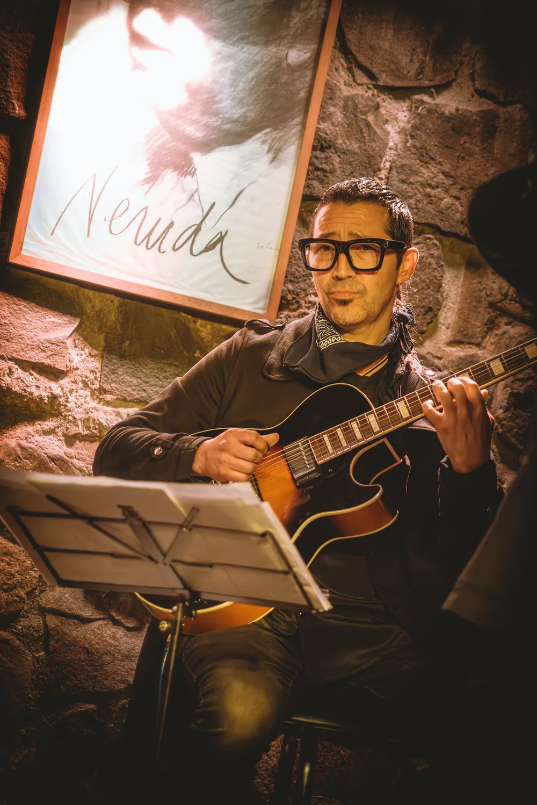
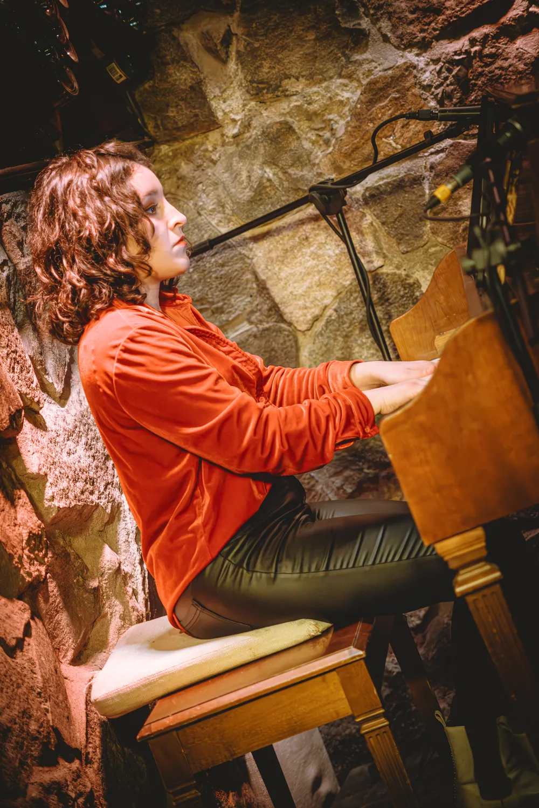
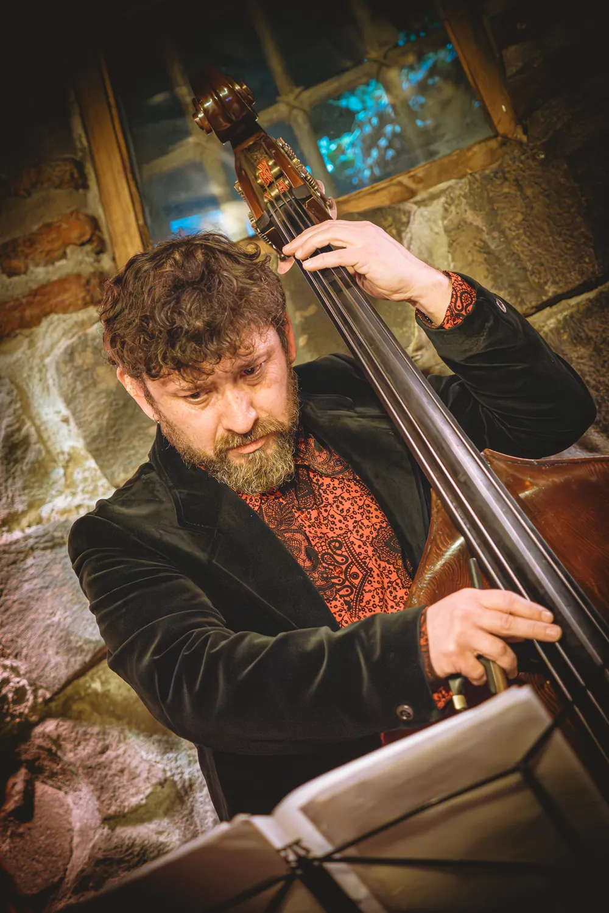

Vértigo
La sensación de una ciudad que acelera, empuja y no se queda quieta.
Piazzollamente · Concierto instrumental
Buenos Aires como una ciudad viva, cambiante y contradictoria.
Un viaje a Buenos Aires a través de las Estaciones Porteñas y otras obras de Astor Piazzolla.

Concepto
Buenos
Aires
Recorremos Buenos Aires desde la música de Piazzolla. A veces la sentimos acelerarse; otras veces todo parece detenerse. Pasamos de la tensión a la intimidad, del vértigo a la nostalgia, de la energía a la memoria. Las cuatro estaciones están en el centro de ese recorrido y, a su alrededor, otras obras abren nuevos rincones de la ciudad.
El quinteto
Piazzollamente reúne intérpretes de sólida trayectoria cuya experiencia, sensibilidad y rigor construyen un lenguaje común. En Las 4 Estaciones Porteñas, ese trabajo colectivo toma forma como concierto instrumental: la flauta aporta una identidad tímbrica particular, pero el sonido nace del diálogo, la escucha y la personalidad musical de todo el quinteto.



Repertorio
No pensamos el programa como una lista de obras aisladas. Lo recorremos como una secuencia de contrastes: la ciudad aparece, se vuelve íntima, cambia con las estaciones, vuelve a tensarse y termina en la memoria.
Michelangelo 70 · Fuga y Misterio
Impulso y tensión. La ciudad entra en movimiento.
Milonga del Ángel
El pulso se recoge y entramos en un espacio más íntimo.
Primavera Porteña · Otoño Porteño · Invierno Porteño · Verano Porteño
La ciudad cambia de temperatura, energía y carácter.
Tanguedia
La energía vuelve a concentrarse y el recorrido se vuelve más intenso.
Adiós Nonino
La memoria ocupa el centro y cierra el viaje.
Experiencia artística
Queremos que el concierto se mueva contigo. Hay momentos de impulso y vértigo, otros de pausa y cercanía. La nostalgia convive con la tensión y la energía, hasta que la memoria queda en primer plano.
La sensación de una ciudad que acelera, empuja y no se queda quieta.
Momentos en los que el sonido se acerca y el tiempo parece hacerse más lento.
Contrastes, ataques y acumulaciones de energía que cambian la dirección del recorrido.
Una mirada hacia aquello que permanece incluso cuando todo alrededor cambia.
El pulso colectivo del quinteto, la velocidad y el movimiento compartido en escena.
El lugar al que llegamos al final, cuando Adiós Nonino cierra el viaje.
Video
Este es Adiós Nonino, la obra con la que cerramos el viaje de Las 4 Estaciones Porteñas.